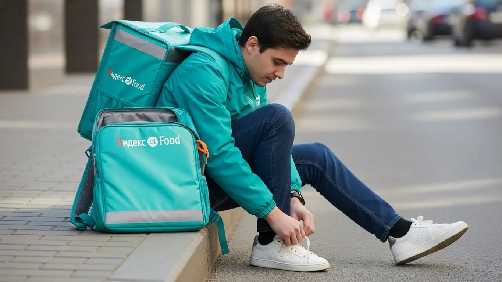
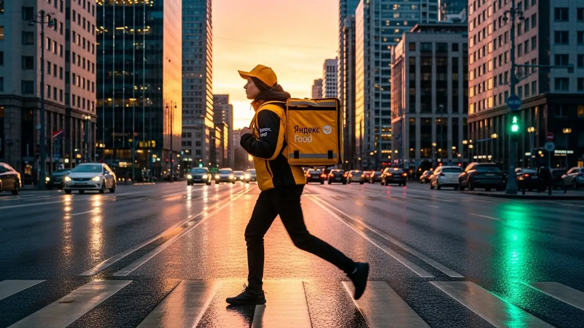
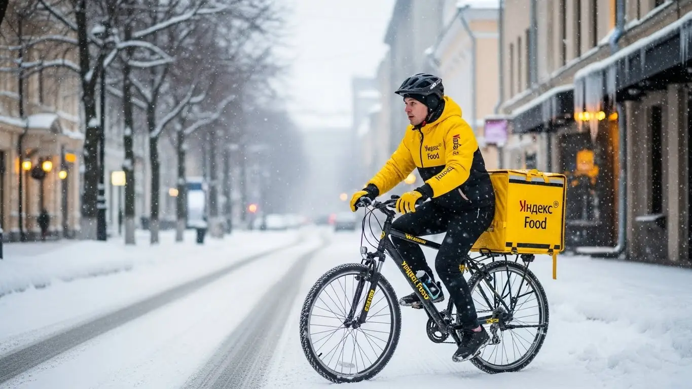

Работа курьером Яндекс Еда в Рязани 2025-2026: доход и условия

- Работа курьером Яндекс Еды в Рязани: для кого эта вакансия и что вы получите
- Сколько вы будете зарабатывать курьером в Рязани: калькулятор дохода и разбор выплат
- Реальный заработок курьера в Рязани: смены и месячный доход
- График работы и форматы занятости
- Требования к кандидату и документы
- Самозанятость, налоги и юридическая чистота
- Пошаговое оформление и первый выход на линию в Рязане
- Пешком, на вело или на авто: что выгоднее в Рязане
- Районы, маршруты и «топовые» зоны заказов в Рязане
- Безопасность, страховка, штрафы и оплата простоя
- Плюсы и возможные минусы работы курьером в Рязане
- Реальные истории и отзывы курьеров из Рязане
- Короткие ответы на главные вопросы
- Итоги и ваш следующий шаг
Все города
Думаешь о работе курьером Яндекс Еды или Лавки в Рязани? Наверняка слышал, что курьеры неплохо зарабатывают, но есть и обратная сторона медали. Боишься, что будешь убивать свою машину на рязанских дорогах, стоять в пробках на Первомайке или в центре, а заработок окажется копеечным? Или что штрафы съедят весь доход, а заказов в твоем районе, например, в Дашково-Песочне, не будет? Забудь про общие рекламные тексты. Здесь мы разберем реальную работу курьером Яндекс Еды и Яндекс Лавки именно в Рязани, с учетом всех местных особенностей 2025-2026 года.
Многие новички приходят в доставку с розовыми очками, а уже через месяц разочаровываются. Почему? Потому что не понимают «внутрянку» работы курьером в Рязани. Твой реальный доход сильно зависит от мелочей: сколько ты тратишь на бензин, как правильно платить налоги самозанятого, как работает система приоритета и, конечно, от особенностей логистики по рязанским районам – где «рыбные» места, а где лучше не соваться. Без этих знаний легко совершить типичные ошибки, которые в Рязани оборачиваются потерей времени и денег. Например, кататься по Канищево в «мертвые» часы или пытаться парковаться в центре, где это почти нереально. Если ты живешь в Рязани и хочешь узнать больше о работе курьером Яндекс Еда в Рязани, включая подробный калькулятор дохода и ответы на частые вопросы, переходи по ссылке: работа курьером Яндекс Еда в Рязане.
Здесь я не просто расскажу, а покажу на примерах, как устроена работа курьером Яндекс Еда Рязань. Мы разберём, какой формат работы выгоднее именно в Рязани – пеший, вело или на авто, выясним реальные цифры дохода в разных районах города. Посчитаем, как погода и сезонность влияют на количество заказов, и расскажу, как избежать штрафов и блокировок. А ещё сравним Яндекс с конкурентами в Рязани и посмотрим на честные отзывы местных курьеров.
Я, Алексей, сам не один год крутил баранку и педали по Рязани, а теперь ещё и управляю небольшим таксопарком-партнёром. Знаю эту кухню изнутри, от и до. И готов поделиться своим опытом, чтобы ты не наступал на те же грабли. Это не рекламный буклет, а честный разговор старшего брата с младшим. Сейчас всё разложу по полочкам, давай по порядку.
Прежде чем погрузиться в детали, предлагаю тебе короткий ликбез по ключевым темам статьи, чтобы ты сразу понял, что тебя ждёт.
Экспресс-навигация: что ты точно узнаешь о работе курьером в Рязани
В этой статье ты ТОЧНО узнаешь:
- Сколько реально можно заработать курьером в Рязани и от чего зависит доход?
- Какой формат работы (пеший, вело, авто) будет самым выгодным именно для Рязани и почему?
- Как выбирать «топовые» районы и слоты в Яндекс Про, чтобы максимизировать заработок и не тратить время впустую?
- За что могут оштрафовать или понизить рейтинг, и как избежать типичных ошибок новичков?
- Что такое самозанятость, как её оформить и сколько налогов придётся платить?
- Что делать, если заказов мало, и как оплата простоя защищает твой доход?
А если тебе некогда читать всю статью — переходи сразу к заключению, где ты найдёшь короткие ответы на все эти вопросы и указания, в каких разделах искать подробности.
А чтобы лучше представить себе картину, вот наглядная инфографика по основным показателям работы курьером в Рязани.
Ключевые цифры работы курьером в Рязани (2025-2026)

Работа курьером Яндекс Еды в Рязани: для кого эта вакансия и что вы получите
Кому подойдёт эта работа в Рязани
Если ты ищешь стабильный доход и ценишь свободу от строгого графика, работа курьером Яндекс Еды в Рязани — отличный вариант. Эта вакансия идеально подходит студентам, которым важна подработка после пар или в выходные, а также тем, кто только начинает свой трудовой путь и не имеет опыта. Главное здесь — желание работать и наличие смартфона.
Многие выбирают эту сферу за гибкий график и возможность получать деньги ежедневно. Это также отличный вариант для водителей, которые хотят использовать свой автомобиль для дополнительного заработка в качестве автокурьера, или для тех, кому нужна временная подработка. В целом, если ты ценишь свободу и быстрые выплаты, стать курьером в Яндекс Еде — это для тебя.
Главные преимущества для жителей районов Московский, Октябрьский, Советский
Одно из главных преимуществ работы курьером в Рязани — это возможность работать рядом с домом. Тебе не придется тратить часы на дорогу через весь город, чтобы добраться до своей рабочей зоны. Например, жители Московского района могут брать заказы из ТРЦ «Премьер» или многочисленных кафе поблизости, не выезжая далеко.
Для тех, кто живет в Октябрьском или Советском районах, тоже есть свои «рыбные» места. В центре города всегда много ресторанов и высокий спрос на доставку, а в спальных районах вроде Дашково-Песочни или Канищево — стабильные заказы из продуктовых магазинов и небольших кафе. Ты сам выбираешь, где тебе удобнее работать через приложение Яндекс Про, что позволяет экономить время и силы.
Краткое обещание по доходу и условиям
По деньгам, сразу скажу, что в Рязани курьер Яндекс Еды может рассчитывать на доход от 2000 до 4000 рублей за смену, работая 8-10 часов. При полной занятости, то есть 20-22 рабочих дня в месяц, реальный заработок может достигать 60 000 – 80 000 рублей, а опытные автокурьеры в пиковые часы и дни зарабатывают и больше.
Важный момент: выплаты здесь ежедневные, что очень удобно, когда деньги нужны «здесь и сейчас». График работы полностью свободный — ты сам выбираешь слоты и зоны работы через приложение Яндекс Про. И да, никакого опыта не требуется, всему научат на коротком онлайн-обучении, чтобы ты мог стать курьером без лишних сложностей.
Кейс из практики:
Мой знакомый, студент из Рязани, живет в Московском районе. Он выходит на смены по 4-5 часов вечером, после учебы, и в выходные дни. В среднем, за такую подработку у него выходит около 1500-2000 рублей в день. За месяц, работая 15-20 дней, он стабильно зарабатывает 25 000 – 35 000 рублей, что для студента очень приличные деньги. Он старается брать слоты в своем районе, чтобы не тратить время на дорогу.
Вывод по разделу:
Работа курьером Яндекс Еды в Рязани — это отличный вариант для тех, кто ищет гибкий график, быстрые выплаты и возможность начать без опыта. Эта подработка подходит студентам, водителям-курьерам и всем, кому нужен дополнительный или основной доход с возможностью работать рядом с домом. Чтобы максимизировать заработок, выбирай слоты в районах с высоким спросом и старайся работать в пиковые часы.
Сколько вы будете зарабатывать курьером в Рязани: калькулятор дохода и разбор выплат
Из чего складывается доход курьера
Твой заработок курьера в Яндекс Еде — это не просто фиксированная ставка, а целая система, которая позволяет тебе влиять на итоговую сумму. Основу составляет оплата за каждый выполненный заказ. К ней добавляется доплата за расстояние: чем дальше везти, тем больше получишь.
Кроме того, есть повышающие коэффициенты, которые включаются в часы пик, в плохую погоду или в районах с высоким спросом. Это могут быть бонусы за выполнение определенного количества заказов или за работу в выходные. Не забывай и про чаевые от клиентов — они могут стать приятным дополнением к основному доходу. Важно отметить, что Яндекс Еда также оплачивает простой, если ты находишься на смене, а заказов временно нет, и может компенсировать проезд в некоторых случаях, что является существенным преимуществом для курьера.
Основные компоненты дохода курьера
| Компонент | Описание | Влияние на доход |
|---|---|---|
| Оплата за заказ | Базовая сумма за каждый доставленный заказ. | Основная часть заработка, зависит от количества заказов. |
| Доплата за расстояние | Дополнительная оплата за каждый километр пути. | Увеличивает доход на дальних маршрутах. |
| Повышающие коэффициенты | Надбавки за работу в часы пик, плохую погоду, высокий спрос. | Значительно увеличивают почасовой заработок. |
| Бонусы | Дополнительные выплаты за выполнение целей (например, 10 заказов за день). | Стимулируют к более активной работе. |
| Чаевые | Благодарность от клиентов. | Непредсказуемый, но приятный бонус. |
| Оплата простоя | Компенсация за время ожидания заказов на активном слоте. | Защищает доход от нехватки заказов. |
| Компенсация проезда | Возможная компенсация расходов на общественный транспорт или топливо. | Снижает операционные расходы курьера. |
Как пользоваться калькулятором дохода
Представь, что у тебя есть инструмент, который покажет, сколько ты можешь заработать, еще до того, как выйдешь на линию. Именно для этого и нужен калькулятор дохода. Пользоваться им очень просто: сначала выбираешь тип доставки — пеший курьер, велокурьер или автокурьер. Это важно, потому что от вида транспорта сильно зависит скорость выполнения заказов и их количество, а значит, и твой потенциальный доход.
Дальше указываешь, сколько часов в день ты планируешь работать и сколько дней в неделю готов выходить на смены. Калькулятор учтет эти данные, а также средние показатели по Рязани, и на выходе покажет тебе примерный дневной и месячный доход. Это поможет тебе спланировать свой бюджет и понять, насколько работа курьером в Яндекс Еде соответствует твоим финансовым ожиданиям.
Калькулятор дохода курьера в Рязани
8 часов в день
5 дней в неделю
Расчёт примерный и основан на усреднённых показателях для Рязани (400 ₽/час). Реальный доход зависит от типа доставки, бонусов, повышающих коэффициентов, района, времени суток и вашей активности.
Чтобы узнать все подробности об условиях работы, требованиях и заполнить анкету, переходи на работу курьером Яндекс Еда в твоём городе. Там ты найдешь актуальный калькулятор, ответы на частые вопросы и форму для быстрой заявки.
Примеры расчёта для пешего, вело- и авто‑курьера в Рязани
Давай посмотрим на конкретных примерах, сколько можно заработать курьером в Рязани.
Пеший курьер: Если ты работаешь пешим курьером в центре Рязани, например, в районе Первомайского проспекта или около Кремля, где много кафе и плотная застройка, за 6-часовую смену в будний день можно заработать около 1800-2500 рублей. Заказы там короткие, но их много, что позволяет поддерживать стабильный доход.
Велокурьер: Для велокурьера, который активно перемещается между спальными районами, такими как Московский и Дашково-Песочня, 8-часовая смена в выходной день может принести 3000-4000 рублей. Велосипед дает скорость и маневренность, позволяя брать больше заказов на средние расстояния и увеличивать свой заработок.
Автокурьер: Водитель-курьер, работающий на своем авто по всему городу и захватывающий пригороды вроде Рыбного или Дягилево, особенно в вечерние часы и плохую погоду, может заработать 4500-6000 рублей за 10-часовую смену. Дальние заказы и повышенные коэффициенты делают автодоставку очень выгодной, обеспечивая высокий доход.
Кейс из практики:
Мой знакомый, автокурьер, работает в Рязани на своей машине. Он предпочитает брать вечерние слоты с 18:00 до 23:00, особенно в пятницу и выходные, когда спрос на доставку из ресторанов максимальный. За такие 5-часовые смены он стабильно зарабатывает 2500-3500 рублей, а за полный выходной день (10-12 часов) его доход часто превышает 6000 рублей. Он активно использует карту спроса в приложении Яндекс Про, чтобы выбирать самые «горячие» зоны, например, вокруг ТРЦ «М5 Молл» или в центре города, что позволяет ему максимизировать заработок.
Вывод по разделу:
Твой доход курьера в Рязани складывается из нескольких составляющих, включая оплату за заказы, бонусы и защиту от простоя. Используя калькулятор, ты можешь заранее оценить свой потенциальный заработок, а примеры показывают, что при правильном подходе и выборе типа транспорта можно достичь хороших результатов. Чтобы зарабатывать больше, старайся работать в пиковые часы и дни, а также использовать все возможности приложения Яндекс Про, которое помогает эффективно управлять заказами и доходом.

Реальный заработок курьера в Рязани: смены и месячный доход
Когда речь заходит о работе курьером, первый вопрос, который возникает у каждого: «Сколько реально зарабатывает курьер в Яндексе?». В Рязани, как и в любом другом городе, доход сильно зависит от множества факторов, но я постараюсь дать тебе максимально честную картину. Это не офисная работа с фиксированной зарплатой, здесь ты сам влияешь на свой заработок, и это главное, что нужно понять.
Твой доход складывается из оплаты за каждый заказ, доплат за расстояние, повышающих коэффициентов в часы пик и, конечно, чаевых. Важно учитывать, что сервисы Яндекса, такие как Яндекс Еда и Яндекс Доставка, также предлагают оплату простоя, если заказов мало, что является хорошей страховкой для твоего дохода. В целом, при правильном подходе и знании города, можно выйти на очень достойные цифры.
Диапазон дохода для подработки и полной занятости
Давай разберем конкретные вилки дохода для Рязани, исходя из моего опыта и наблюдений. Для подработки, когда ты выходишь на линию на 2–4 часа в день, например, после учёбы или основной работы, пеший курьер или велокурьер может рассчитывать на 800–1500 рублей за смену. Это, как правило, вечерние часы или выходные, когда спрос на доставку еды самый высокий. Водители-курьеры за такое же время могут заработать 1200–2000 рублей, так как они берут более дальние и дорогие заказы.
При полной занятости, когда ты работаешь 8–10 часов в день, цифры, конечно, значительно выше. Например, пеший курьер в центре Рязани, в Советском районе или около ТРЦ «Премьер», может приносить 2500–4000 рублей в день. Велокурьер, активно перемещаясь между спальными районами, такими как Канищево и Дашково-Песочня, может заработать 3000–5000 рублей. А водитель-курьер на своем авто, который охватывает весь город и даже пригороды вроде Солотчи или Рыбного, способен выйти на 4000–7000 рублей за смену, особенно если грамотно ловит заказы в пиковые часы.
Кейс из практики: Мой знакомый, студент РГУ имени С.А. Есенина, работает пешим курьером по 3 часа вечером в будни и по 6 часов в выходные. Он фокусируется на заказах вокруг университета и в центре. За неделю у него выходит в среднем 8000–10000 рублей, что для подработки очень неплохо. Он говорит, что главное — не лениться и брать слоты в самые «рыбные» часы.
Итого, месячный доход при полной занятости для водителя-курьера в Рязани может достигать 90 000 – 120 000 рублей, для велокурьера – 70 000 – 90 000 рублей, а для пешего – 50 000 – 70 000 рублей. Это, конечно, при условии активной работы и правильного планирования. Чтобы стабильно зарабатывать, нужно постоянно отслеживать карту спроса в приложении Яндекс Про.
Как район, время суток и погода влияют на доход
На твой заработок сильно влияют внешние факторы, и опытные курьеры умеют этим пользоваться. Во-первых, это район. В Рязани самые «хлебные» места – это центр (Советский район), где много ресторанов и офисов, а также крупные торговые центры, такие как ТРЦ «Премьер» и ТРЦ «М5 Молл». Здесь всегда высокий спрос, особенно в обеденные часы и вечером. В спальных районах, например, в Московском или Октябрьском, заказов тоже хватает, но они могут быть более разрозненными.
Во-вторых, время суток. Вечера (с 18:00 до 22:00) и выходные дни – это золотое время для курьера. В эти часы спрос на доставку еды и продуктов резко возрастает, и Яндекс Про автоматически включает повышающие коэффициенты. Это значит, что за каждый заказ ты получаешь больше денег. Например, в пятницу вечером или в воскресенье днём можно заработать в полтора-два раза больше, чем в обычный будний день.
В-третьих, погода. Дождь, снегопад, сильный ветер или аномальная жара – всё это играет тебе на руку. В такую погоду люди предпочитают заказывать еду на дом, а курьеров на линии становится меньше. Как результат, спрос растет, коэффициенты взлетают, и чаевые от благодарных клиентов тоже становятся щедрее. Например, во время рязанских снегопадов, когда дороги заносит, водители-курьеры могут заработать за несколько часов столько, сколько в обычный день за полную смену.
Кейс из практики: В прошлом году, когда Рязань накрыл сильный снегопад, мой водитель-курьер Сергей вышел на линию в Железнодорожном районе. За 6 часов работы он заработал почти 6500 рублей, выполнив всего 12 заказов. Повышающие коэффициенты были максимальными, а клиенты активно оставляли чаевые, понимая, насколько тяжело работать в такую погоду.
Поэтому, если хочешь увеличить свой доход, не бойся выходить на линию в плохую погоду или в часы пик. Это не всегда комфортно, но зато очень выгодно.
Советы по увеличению заработка от опытных курьеров
Чтобы зарабатывать больше без лишних переработок, нужно работать не только усердно, но и умно. Вот несколько проверенных советов:
- Выбирай правильные слоты: Всегда старайся брать слоты в часы пик. Это вечера будней (с 18:00 до 22:00) и выходные дни (с 12:00 до 22:00). В это время коэффициенты выше, и заказов больше. Если есть возможность, захватывай и обеденный пик (с 12:00 до 14:00), особенно в деловых районах Рязани.
- Ориентируйся на зоны с высоким спросом: В приложении «Яндекс Про» всегда видно карту спроса. Выбирай зоны, которые подсвечены желтым или красным цветом. В Рязани это часто центр, районы вокруг ТРЦ «Премьер» и ТРЦ «М5 Молл», а также густонаселенные спальники вроде Канищево или Дашково-Песочни. Не сиди на одном месте, если видишь, что в соседней зоне активность выше.
- Комбинируй типы доставки (если возможно): Если у тебя есть и велосипед, и машина, используй их стратегически. На велосипеде удобно работать в плотной застройке центра, где пробки и парковка – проблема. На машине – для дальних заказов между районами или в пригороды. Пешим курьерам стоит сосредоточиться на небольших, но частых заказах в пределах одного квартала.
Кейс из практики: Велокурьер Анна из Рязани, работающая уже второй год, всегда начинает смену в Московском районе, где живет. Она берет слоты с 17:00 до 21:00. В это время она успевает выполнить 8-10 заказов, перемещаясь между жилыми комплексами и небольшими кафе. Её секрет – всегда быть на связи и не отказываться от заказов, даже если они кажутся не самыми выгодными, ведь это влияет на рейтинг. В среднем за вечер она зарабатывает 2000-2500 рублей.
Помни, что твой рейтинг в приложении «Яндекс Про» тоже играет роль. Чем выше рейтинг, тем больше приоритета при распределении заказов. Поэтому старайся быть вежливым, пунктуальным и аккуратным с заказами.
| Параметр | Пеший курьер | Велокурьер | Автокурьер |
|---|---|---|---|
| Средний доход за 4 часа (подработка) | 800–1500 ₽ | 1000–1800 ₽ | 1200–2000 ₽ |
| Средний доход за 8 часов (полная занятость) | 2500–4000 ₽ | 3000–5000 ₽ | 4000–7000 ₽ |
| Оптимальные зоны в Рязани | Центр, ул. Почтовая, ТРЦ «Премьер» | Московский, Октябрьский, Канищево, Дашково-Песочня | Весь город, пригороды (Солотча, Рыбное) |
| Влияние погоды | Среднее (сложнее, но выше коэффициенты) | Высокое (сложнее, но очень высокие коэффициенты) | Высокое (комфортнее, очень высокие коэффициенты) |
| Главное преимущество | Минимальные расходы, фитнес | Скорость, маневренность, экологичность | Комфорт, большие заказы, дальние расстояния |
Вывод по разделу: Реальный заработок курьера в Рязани напрямую зависит от твоей активности, выбора времени и места работы, а также умения пользоваться особенностями города и погодными условиями. Чтобы максимизировать доход, всегда следи за картой спроса в приложении и не бойся выходить на линию в пиковые часы.
График работы и форматы занятости
Одно из главных преимуществ работы курьером в Яндекс Еде – это гибкость графика и возможность получать ежедневные выплаты. Ты сам решаешь, когда и сколько работать, что делает эту вакансию идеальной для тех, кто ищет подработку или хочет совмещать её с другими делами, даже без опыта. Нет строгого начальника, нет фиксированного расписания – только ты и приложение «Яндекс Про».
Эта гибкость позволяет подстроить работу под любой жизненный ритм. Будь ты студент, родитель или человек с основной работой, всегда найдется удобный формат занятости. Главное – научиться эффективно планировать свои выходы на линию, чтобы получать стабильный и высокий доход.
Подработка после учёбы или основной работы
Для студентов или тех, у кого есть основная работа, Яндекс Еда в Рязани предлагает отличные возможности для подработки. Ты можешь выходить на смены всего на несколько часов в день или только в выходные. Например:
- Студент РГАТУ имени П.А. Костычева: После пар, с 17:00 до 21:00, можно брать слоты в Приокском районе или ближе к центру. За 4 часа активной работы на велосипеде или пешком вполне реально заработать 1200–1800 рублей. Этого хватит на карманные расходы, оплату интернета или даже часть аренды.
- Сотрудник с пятидневкой: Если у тебя есть основная работа, ты можешь выходить на линию в субботу и воскресенье. Работая по 8–10 часов в каждый из этих дней, водитель-курьер на своем авто в Рязани может заработать 8000–12000 рублей за выходные. Это существенная прибавка к основному доходу.
- Молодая мама: Можно брать короткие слоты по 2–3 часа в обеденное время, пока ребенок в садике или спит. Пеший курьер в своем районе, например, в Дашково-Песочне, за это время может принести 700–1000 рублей, не отрываясь от домашних дел надолго.
Кейс из практики: Моя соседка, Ольга, работает бухгалтером до 17:00. Чтобы оплатить ипотеку, она по выходным выходит на своей машине в Яндекс Доставку. Она выбирает слоты в Октябрьском районе и вокруг ТРЦ «Круиз». За два выходных дня, работая по 9 часов, она стабильно зарабатывает около 10 000 – 11 000 рублей, что очень помогает семейному бюджету.
Такой формат подработки позволяет не только пополнить бюджет, но и сохранить баланс между работой, учебой и личной жизнью.
Полная занятость: как выглядит типичный день курьера
Типичный день курьера при полной занятости в Рязани выглядит примерно так:
Обычно курьер выходит на линию к 9:00–10:00 утра. Многие начинают работу в своем районе, например, если живешь в Канищево, то ищешь первые заказы там. Утренние часы могут быть спокойными, но это время для заказов из супермаркетов или завтраков. К обеду (с 12:00 до 14:00) начинается первый пик: курьеры перемещаются ближе к бизнес-центрам или центральным улицам, где много офисов и ресторанов.
После обеда наступает небольшой спад, который можно использовать для перерыва, обеда или перемещения в другую зону. Вечерний пик (с 18:00 до 22:00) – самый активный. В это время заказов больше всего, и повышающие коэффициенты максимальны. Курьеры активно развозят ужины по всему городу, от Московского района до Железнодорожного. Заканчивается смена обычно к 22:00–23:00, когда спрос начинает падать.
Кейс из практики: Водитель-курьер Иван, работает в Рязани на полной занятости. Он начинает в 9 утра в районе Дашково-Песочни, берет несколько заказов из местных магазинов. К 12:00 переезжает в центр, где активно работает до 14:00. После небольшого перерыва он возвращается на линию к 17:00 и работает до 22:00, фокусируясь на заказах из ресторанов. За такой день он выполняет 18-25 заказов и зарабатывает от 5000 до 6500 рублей.
Важно чередовать активные периоды с короткими перерывами, чтобы не переутомляться. Приложение «Яндекс Про» позволяет тебе отключаться от линии в любой момент.
Как планировать слоты и выходы через приложение «Яндекс Про»
Планирование – ключ к стабильному доходу в Яндекс Еде. Все управление твоей занятостью происходит через приложение «Яндекс Про». Вот как это работает:
- Выбор зон и слотов: В приложении ты увидишь карту Рязани, разделенную на зоны. Некоторые зоны могут быть подсвечены, что указывает на повышенный спрос. Ты можешь заранее забронировать слоты (временные интервалы) в определенных зонах. Это гарантирует тебе заказы и позволяет планировать свой день. Например, ты можешь выбрать слот на 4 часа в Московском районе или на 6 часов в центре.
- Важность пунктуальности: Если ты забронировал слот, крайне важно выйти на линию вовремя. Опоздания могут негативно сказаться на твоем рейтинге, а также привести к тому, что слот будет отменен. Высокий рейтинг – это не только приоритет при распределении заказов, но и показатель твоей надежности как курьера.
- Гибкие выходы на линию: Помимо слотов, ты можешь просто выйти на линию в режиме «Свободный график» в любое время. В этом случае заказы будут приходить, если в твоей текущей зоне есть спрос. Однако бронирование слотов дает больше стабильности и гарантирует определенное количество заказов.
Кейс из практики: Новичок Олег из Рязани в первую неделю работы не бронировал слоты, а просто выходил на линию, когда было удобно. В итоге, заказов было меньше, чем он ожидал. По совету опытных курьеров, он начал заранее бронировать слоты в Железнодорожном районе на вечерние часы. Его доход сразу вырос на 30%, а заказы стали приходить стабильнее.
Научись пользоваться картой спроса, бронируй слоты в выгодных зонах и всегда будь пунктуален – это основа успешной работы курьером.
Вывод по разделу: Гибкий график работы в Яндекс Еде позволяет каждому найти свой формат занятости, будь то подработка или полная занятость. Эффективное планирование слотов через приложение «Яндекс Про» и пунктуальность – твои главные инструменты для обеспечения стабильного и высокого дохода.
Требования к кандидату и документы
Чтобы начать работать курьером в Яндекс Еде, не нужно иметь особый опыт или высшее образование. Главное — соответствовать базовым требованиям и подготовить необходимые документы. Это несложно, и большинство кандидатов без проблем проходят этот этап. Я помогу тебе разобраться во всех нюансах, чтобы ты не тратил время зря и сразу понимал, что к чему.
Важно понимать, что требования к курьерам Яндекс Еды в Рязани, как и в других городах, стандартизированы. Они касаются возраста, гражданства и минимального набора документов. Не стоит переживать, если у тебя нет опыта — это не главное. Главное — желание работать и ответственный подход.
Возраст, гражданство и базовые условия
Первое, что нужно знать: курьером Яндекс Еды можно стать с 18 лет. Это обязательное условие, связанное с законодательством и ответственностью за доставку. Если тебе меньше, к сожалению, пока придётся подождать. По гражданству также есть чёткие рамки: принимают граждан Российской Федерации или стран Евразийского экономического союза (ЕАЭС: Армения, Беларусь, Казахстан, Кыргызстан).
Что касается здоровья и физической формы, здесь всё логично. Для пеших курьеров важна выносливость, ведь придётся много ходить, особенно в центре Рязани, например, по улице Почтовой или в районе Кремля, где много старых зданий без лифтов. Велокурьеры должны быть в хорошей физической форме, чтобы крутить педали по всему городу, будь то Московский район или Дашково-Песочня. Автокурьерам же, кроме водительских прав и стажа, нужна общая внимательность и способность ориентироваться на дорогах Рязани.
Какие документы нужны для работы курьером
Список документов для работы курьером Яндекс Еды довольно стандартный и не вызовет сложностей. Тебе понадобится:
- Паспорт гражданина РФ или страны ЕАЭС: это основной документ, подтверждающий твою личность и гражданство. Его данные нужны для оформления договора и регистрации в системе Яндекс Про.
- ИНН (индивидуальный номер налогоплательщика): необходим для регистрации самозанятости и уплаты налогов. Без него ты не сможешь легально работать и получать доход.
- Банковская карта: на неё будут приходить все твои выплаты. Убедись, что карта оформлена на твоё имя.
- Медицинская книжка (при необходимости): для большинства заказов Яндекс Еды медкнижка не требуется. Однако, если ты планируешь доставлять продукты из некоторых магазинов или ресторанов, работающих с определёнными категориями товаров, она может понадобиться. Об этом тебе сообщат на этапе оформления, если возникнет такая необходимость.
Подготовить эти документы заранее — значит сэкономить время. Просто сфотографируй их или отсканируй, чтобы они были под рукой при заполнении анкеты. Весь процесс максимально упрощён, чтобы ты мог быстро приступить к работе.
Можно ли работать с 16 лет и какие есть альтернативы
Как я уже говорил, в Яндекс Еде действуют строгие возрастные ограничения: к работе допускаются только лица, достигшие 18 лет. Это связано с юридическими аспектами, полной материальной ответственностью и особенностями трудового законодательства, которое регулирует труд несовершеннолетних. Поэтому, если тебе 16 или 17 лет, стать курьером Яндекс Еды, к сожалению, пока не получится.
Однако это не значит, что для подростков нет вариантов подработки в Рязани. Можно рассмотреть другие форматы: например, работа промоутером, помощником в кафе или магазинах, где нет строгих требований к возрасту и есть возможность работать по гибкому графику. Также существуют различные платформы для выполнения мелких поручений, которые не требуют официального оформления и могут подойти для получения первого опыта и карманных денег.
Кейс из практики: Мой знакомый, Сергей из Приокского района, ему было 17. Он очень хотел работать автокурьером, но мы объяснили, что по правилам и страховке это невозможно до 18 лет. Он расстроился, но потом нашёл подработку в местном супермаркете, раскладывал товар по вечерам. Через год, когда ему исполнилось 18, он вернулся к нам и уже без проблем оформился автокурьером. Так что всему своё время.
Краткий вывод по требованиям: Для работы курьером в Рязани нужны паспорт, ИНН, банковская карта и возраст от 18 лет. Медкнижка требуется редко. Подготовь документы заранее, чтобы быстро пройти регистрацию. Несовершеннолетним, к сожалению, придётся искать другие варианты подработки.
Самозанятость, налоги и юридическая чистота
Вопросы про «официальность» работы, налоги и юридическую чистоту всегда вызывают много опасений у новичков. Многие привыкли к «серым» схемам или боятся сложной бухгалтерии. Сразу скажу: в Яндекс Еде всё максимально прозрачно и легально благодаря формату самозанятости. Это удобно и безопасно, не нужно ничего бояться.
Этот раздел поможет тебе разобраться, почему самозанятость — это лучший вариант для курьера, как её оформить буквально за 10 минут и сколько налогов придётся платить. Поверь, это намного проще, чем кажется, и даёт тебе уверенность в завтрашнем дне.
Почему курьеры Яндекс Еды работают как самозанятые
Формат самозанятости, или как его ещё называют, налог на профессиональный доход (НПД), стал настоящим спасением для многих, кто работает на себя. Для курьеров Яндекс Еды это основной и самый удобный способ сотрудничества. Во-первых, это полностью официальный доход. Ты работаешь легально, и твой заработок подтверждается государством, что важно, например, для получения кредитов или виз.
Во-вторых, самозанятость избавляет тебя от сложной бухгалтерии. Тебе не нужно нанимать бухгалтера или разбираться в дебрях налогового кодекса. Все операции по учёту доходов и уплате налогов происходят через простое мобильное приложение «Мой налог». Это очень удобно: ты видишь все свои поступления, и система сама рассчитывает сумму налога. В итоге, ты работаешь спокойно, зная, что все твои доходы чисты и прозрачны.
Как за 10 минут оформить самозанятость через «Мой налог»
Оформить самозанятость — дело нескольких минут, и это не преувеличение. Самый простой способ — через официальное приложение «Мой налог». Вот пошаговая схема:
- Скачай приложение «Мой налог» на свой смартфон (доступно для Android и iOS).
- Зарегистрируйся: тебе понадобится паспорт. Можно отсканировать его через камеру телефона или ввести данные вручную. Также нужно будет сделать селфи для идентификации.
- Подтверди данные: приложение проверит информацию через государственные базы.
- Выбери вид деятельности: укажи «Курьерские услуги» или «Доставка».
Всё! Обычно весь процесс занимает не более 10-15 минут. После этого ты официально становишься самозанятым и можешь начинать работать. Некоторые партнёры Яндекс Еды также предлагают помощь в оформлении самозанятости, но через «Мой налог» это делается максимально быстро и без посредников.
Сколько и как платить налоги
Налоговая ставка для самозанятых курьеров очень выгодная. Если ты работаешь с физическими лицами (то есть напрямую с клиентами, если они оставляют чаевые), ставка составляет всего 4%. Если же ты получаешь доход от юридических лиц (в данном случае от Яндекс Еды), то ставка будет 6%. Большая часть твоего заработка будет приходить от Яндекс Еды, поэтому ориентируйся на 6%.
Самое удобное, что тебе не нужно самостоятельно ничего считать и куда-то ходить. Приложение «Мой налог» автоматически формирует чеки по каждому поступлению от Яндекс Еды и к 12 числу каждого месяца присылает уведомление с суммой налога за предыдущий месяц. Тебе останется только оплатить его через приложение до 28 числа. Это намного проще и безопаснее, чем работать неофициально, получать «серый» кэш и постоянно переживать о возможных проблемах с законом.
Кейс из практики: Мой знакомый, Сергей из Канищево, работает автокурьером. Раньше он подрабатывал «налево», получал наличку и постоянно нервничал. Когда перешёл в Яндекс Еду и оформил самозанятость, он был удивлён, насколько это просто. «Алексей, я просто нажимаю кнопку в приложении, и всё! Никаких бумажек, никаких очередей. И сплю спокойно», — говорил он. За месяц он зарабатывает около 70 000 рублей, и налог в 6% (4200 рублей) для него совсем не обременителен, учитывая легальность и спокойствие.
| Параметр | Самозанятый курьер | Работа через парк-партнёр (альтернатива) |
|---|---|---|
| Налоговая ставка | 4% (физлица), 6% (юрлица) | Обычно 6% + комиссия парка (около 3-5%) |
| Оформление | Самостоятельно через «Мой налог» за 10-15 минут | Парк помогает с оформлением, но может быть дольше |
| Вывод денег | Моментально на карту, без задержек | По графику парка (ежедневно, раз в несколько дней) |
| Отчетность | Автоматически через «Мой налог», просто и прозрачно | Парк берет на себя, но ты зависишь от его отчетности |
| Легальность | Полностью официальный доход | Официально через парк, но с дополнительными комиссиями |
Краткий вывод по самозанятости: Самозанятость — это простой, быстрый и легальный способ получать доход от работы курьером в Рязани. Оформление занимает минимум времени через приложение «Мой налог», а налоги (4-6%) списываются автоматически. Это даёт тебе уверенность и избавляет от лишних хлопот с бухгалтерией.
Пошаговое оформление и первый выход на линию в Рязане
Если ты решил попробовать себя в работе курьером Яндекс, то первый вопрос, который возникает, — как вообще начать? Многие думают, что это сложно, но на самом деле процесс оформления и начала работы максимально упрощен. Яндекс Еда и Яндекс Доставка заинтересованы в том, чтобы новые курьеры быстро выходили на линию и начинали зарабатывать, ведь работа курьером Яндекс доступна даже без опыта, поэтому все шаги интуитивно понятны.
В Рязани, как и везде, система отлажена: от заполнения анкеты до первого заказа проходит минимум времени, и начать работу курьером можно быстро. Моя задача как опытного курьера и владельца таксопарка — показать тебе, что барьера «сложно устроиться на работу курьером» тут нет. Главное — желание и смартфон.
Шаг 1–2: анкета и онлайн‑обучение
Первым делом тебе нужно заполнить анкету на сайте или через приложение Яндекс Про, чтобы стать курьером. Это займет буквально 10–15 минут. Там спрашивают базовые вещи: ФИО, номер телефона, город (в нашем случае, Рязань), желаемый тип доставки (пеший, вело или авто), а также данные для оформления самозанятости или работы через официального партнёра Яндекс. Ничего сложного, никаких каверзных вопросов.
После заполнения анкеты и проверки данных (обычно это занимает от нескольких часов до суток) тебе предложат пройти короткое онлайн-обучение. Это не скучные лекции, а интерактивные модули с видео и тестами. Там расскажут про стандарты сервиса, правила безопасности на дороге и при работе с заказами, как пользоваться приложением Яндекс Про. Обучение важно, чтобы ты понимал, как правильно общаться с клиентами, что делать в нестандартных ситуациях и как эффективно работать курьером, избегая ошибок.
Шаг 3: получение сумки и доступа к заказам в Рязане
Как только ты успешно пройдешь онлайн-обучение, следующим шагом будет получение фирменной термосумки или термокороба и экипировки. В Рязани это можно сделать несколькими способами. Чаще всего курьеры получают термокороб через официальных партнёров Яндекс Еды, которые имеют пункты выдачи в городе. Адреса таких пунктов легко найти прямо в приложении Яндекс Про после регистрации.
Иногда есть возможность заказать доставку сумки прямо до дома, но это зависит от текущей загруженности и логистики сервиса. Важно, что термокороб — это не просто брендированный аксессуар, а инструмент для сохранения качества продуктов, поэтому без него на линию выйти не получится. Он выдается бесплатно или на условиях аренды, что тоже удобно для новичков.
Шаг 4: первый слот и первый доход
После получения сумки и активации аккаунта в Яндекс Про ты готов к первому выходу на линию. В приложении тебе станут доступны слоты — это временные интервалы, когда ты можешь выполнять заказы. Выбирай удобное время и знакомый район Рязани, например, центр или свой спальный район, чтобы было проще ориентироваться.
Как только ты выйдешь на линию, приложение начнет предлагать заказы. Не бойся, если первый заказ покажется немного волнительным — это нормально. Главное, следуй инструкциям в приложении, не торопись и будь вежлив с клиентами. Многие мои ребята начинали так же, и уже через пару часов чувствовали себя увереннее. Первый доход ты получишь уже в этот же день или на следующий, ведь выплаты в Яндекс Еде и Яндекс Доставке ежедневные.
Кейс из практики: Мой знакомый, студент из Рязани, Артём, решил попробовать работу курьером в Яндекс Еде как подработку. Он заполнил анкету вечером, на следующий день утром прошел обучение и получил сумку в пункте выдачи на улице Есенина. Днем он взял свой первый слот на 4 часа в районе Первомайского проспекта. За это время он выполнил 5 заказов, заработав около 1500 рублей. Он говорит, что самое сложное было найти нужный подъезд, но потом привык.
Вывод: Процесс оформления и выхода на линию в Рязани, чтобы стать курьером Яндекс, максимально прост и быстр. От заполнения анкеты до первого заработка может пройти всего один день, и ты быстро освоишься в работе курьером. Не откладывай, если хочешь начать работу курьером Яндекс — просто следуй пошаговой инструкции, и ты быстро освоишься. Мой совет: начни с коротких слотов в знакомом районе, чтобы освоиться без лишнего стресса.
Пешком, на вело или на авто: что выгоднее в Рязане
Выбор способа доставки — это один из ключевых моментов, который влияет на твой заработок и комфорт работы курьером. В Рязани, как и в любом городе, есть свои особенности, которые делают тот или иной формат более выгодным. Здесь нет универсального ответа, всё зависит от твоих возможностей, физической подготовки и даже от того, в каком районе ты планируешь работать.
Я сам начинал с пеших доставок, потом пересел на велосипед, а сейчас в основном на авто. Поэтому могу сказать, что каждый вариант имеет свои плюсы и минусы, и важно выбрать то, что подходит именно тебе. Давай разберем, что выгоднее для работы курьером в Рязани.
Пеший курьер: для центра и плотной застройки в Рязане
Пешая доставка в Рязани отлично подходит для центральных и исторических районов, таких как окрестности Рязанского Кремля, улица Почтовая или часть Первомайского проспекта. Здесь плотная застройка, много пешеходных зон и часто бывают пробки, особенно в часы пик. На машине там особо не разгонишься, да и парковку найти проблема.
Для пешего курьера Яндекс Еды это идеальные условия: короткие расстояния между ресторанами и клиентами, возможность быстро пройти там, где машина встанет. К тому же, это отличный способ поддерживать себя в форме, так сказать, «оплачиваемый фитнес». Заказов в центре всегда много, а значит, и заработок пешего курьера будет стабильным.
Велокурьер: быстрые доставки между спальными районами
Велокурьеры в Рязани — это золотая середина между пешими и автокурьерами. Они быстрее пеших, не зависят от пробок, как водители, и могут легко перемещаться между спальными районами. Например, в Московском районе или Дашково-Песочне, где много жилых комплексов и кафе, велокурьеры очень востребованы.
На велосипеде ты, как велокурьер, можешь быстро доставлять заказы на средние расстояния, объезжая заторы и сокращая время в пути. Это позволяет брать больше заказов за смену и, соответственно, больше зарабатывать. Плюс, как я уже говорил, это отличная физическая нагрузка, которая не только приносит доход, но и пользу для здоровья.
Водитель‑курьер: заказы по всему городу и пригороду
Если у тебя есть личный автомобиль, то работа водителя-курьера на своем авто открывает самые широкие возможности в Рязани. Ты можешь брать заказы по всему городу, включая дальние районы, а также в пригороды, такие как Рыбное или Солотча. Именно на авто выгодно выполнять крупные и дорогие заказы, которые пешим курьерам или велокурьерам просто не под силу.
Особенно выгодно работать на машине в плохую погоду — дождь, снег, сильный ветер. В такие дни спрос на доставку резко возрастает, а повышающие коэффициенты делают заработок водителя-курьера очень привлекательным. В часы пик, когда пробки парализуют центр, ты можешь сосредоточиться на доставках между спальными районами или в пригороды, где трафик меньше, а заказы длиннее и дороже.
Сравнение форматов работы курьером в Рязане
| Параметр | Пеший курьер | Велокурьер | Водитель-курьер |
|---|---|---|---|
| Зоны работы | Центр, плотная застройка (Кремль, Почтовая) | Спальные районы (Московский, Дашково-Песочня), центр | Весь город, пригороды (Рыбное, Солотча) |
| Скорость доставки | Средняя (зависит от трафика) | Высокая (не зависит от пробок) | Высокая (на дальние расстояния) |
| Потенциальный доход | Стабильный, но ниже, чем у авто | Выше пешего, хороший баланс | Самый высокий, особенно на дальних заказах |
| Физическая нагрузка | Высокая | Средняя/Высокая | Низкая |
| Расходы | Минимальные (проезд) | Низкие (обслуживание велосипеда) | Высокие (топливо, амортизация, ТО) |
| Зависимость от погоды | Высокая | Высокая | Низкая (комфорт в любую погоду) |
Кейс из практики: Мой водитель-курьер Сергей из Рязани, работающий на своем авто, часто берет слоты по вечерам и в выходные. Он специализируется на доставках из ТРЦ «М5 Молл» в отдаленные районы или в Рыбное. За 6-часовую смену в субботу он может заработать 4000-5000 рублей, что показывает высокий потенциальный доход. В плохую погоду его доход еще выше за счет повышающих коэффициентов.
Вывод: Выбор транспорта для работы курьером Яндекс в Рязани напрямую влияет на твой доход и комфорт. Пеший курьер идеален для центра, велокурьер — для быстрых доставок между спальными районами, а водитель-курьер на своем авто — для заказов по всему городу и пригороду, особенно в плохую погоду. Мой совет: если есть возможность, попробуй разные форматы, чтобы понять, какой тебе подходит больше всего, но помни, что автокурьеры обычно зарабатывают больше за счет дальности и объема заказов, что делает работу курьером на своем авто очень выгодной.
Районы, маршруты и «топовые» зоны заказов в Рязане
Где больше всего заказов: ТРЦ, бизнес‑центры и туристические места
В Рязани, как и в любом крупном городе, есть свои «рыбные» места, где заказов всегда много, а повышающие коэффициенты — частое явление. Для тех, кто ищет работу курьером в Рязани, эти зоны особенно привлекательны. В первую очередь, это, конечно, крупные торговые центры. Возле ТРЦ «М5 Молл», ТРЦ «Премьер» и ТРЦ «Круиз» всегда кипит жизнь: здесь расположены десятки кафе, ресторанов и магазинов, которые активно пользуются сервисами Яндекс Еда и Яндекс Доставка. Курьеры, работающие здесь, редко сидят без дела.
Помимо ТРЦ, стабильно высокий спрос на доставку наблюдается в деловых кварталах и туристических местах Рязани. Центр города, особенно улицы Ленина, Почтовая и Первомайский проспект, а также район площади Победы, изобилует бизнес-центрами и офисами. В обеденное время и вечером здесь особенно много заказов на еду и напитки через Яндекс Еду.
Не стоит забывать и про туристические зоны, такие как Рязанский Кремль и Лыбедский бульвар. Здесь много гостиниц, гостевых домов и кафе, которые обслуживают как туристов, так и местных жителей. В выходные дни и праздники эти локации становятся настоящими центрами притяжения для курьеров, предлагая хороший доход за счет чаевых и стабильного потока заказов. Это отличная подработка для тех, кто ищет дополнительный заработок.
Работа в своём районе: примеры для популярных жилых кварталов
Многие курьеры предпочитают работать в своём районе, и это вполне логично. Это одно из преимуществ свободного графика и комфортных условий работы. Во-первых, ты хорошо знаешь местность, что экономит время на поиск адресов. Во-вторых, не нужно тратить лишнее время и топливо на дорогу до «рабочей» зоны. В Рязани есть несколько спальных районов, где вполне реально зарабатывать, почти не выезжая за их пределы.
Например, в Московском районе Рязани достаточно плотная застройка и много сетевых магазинов, кафе и ресторанов. Здесь можно успешно работать пешим курьером или велокурьером, выполняя короткие заказы через Яндекс Еду и Яндекс Доставку. Аналогичная ситуация в Дашково-Песочне и Канищево: эти районы хорошо развиты, имеют свою инфраструктуру с супермаркетами, аптеками и точками общепита, что обеспечивает стабильный поток заказов.
Работая в своём районе, ты можешь эффективно планировать смены, совмещая их с домашними делами или учёбой. Это особенно удобно для тех, кто ищет подработку или хочет избежать длительных поездок через весь город. Даже без опыта, ты можешь стать самозанятым курьером и начать зарабатывать. Главное — выбрать район с достаточным количеством партнёров Яндекс Еды и Яндекс Доставки.
Как выбирать зоны и слоты в «Яндекс Про», чтобы не мотаться впустую
Чтобы не тратить время и топливо впустую, важно научиться правильно выбирать зоны и слоты в приложении «Яндекс Про». Это ключевой инструмент для каждого курьера. Карта спроса — твой главный помощник. Она показывает, где сейчас максимальная активность и где действуют повышающие коэффициенты. Эти «горячие» зоны подсвечиваются разными цветами, указывая на высокий спрос на заказы.
Мой совет: всегда смотри на карту спроса перед началом смены и в течение дня. Если видишь, что в твоём районе заказов мало, а в соседнем — «красная» зона, возможно, стоит туда переместиться. Также обращай внимание на время суток: пиковые часы (обед, ужин, выходные) всегда приносят больше заказов и выше коэффициенты, что увеличивает твой доход. Планируй свои маршруты так, чтобы не делать пустых пробегов. Например, если доставил заказ Яндекс Доставки на окраину, посмотри, нет ли там поблизости других точек выдачи или магазинов Яндекс Еды, откуда можно взять следующий заказ, чтобы не возвращаться в центр пустым.
| Зона | Тип заказов | Лучший тип курьера | Особенности |
|---|---|---|---|
| Центр (ул. Ленина, Почтовая, Кремль) | Рестораны, кафе, офисы | Пеший, велокурьер | Высокий спрос, пробки, много коротких заказов, хорошие чаевые. |
| ТРЦ (М5 Молл, Премьер, Круиз) | Фастфуд, магазины, рестораны | Автокурьер, велокурьер | Стабильный поток, заказы из разных точек, удобные парковки. |
| Спальные районы (Московский, Дашково-Песочня, Канищево) | Продукты, сетевые кафе | Пеший, велокурьер | Работа рядом с домом, знакомые маршруты, меньше пробок. |
Кейс из практики: Мой знакомый, автокурьер Сергей, обычно начинает смену в центре Рязани, в районе Первомайского проспекта, где много бизнес-центров. Используя Яндекс Про, с 12 до 15 часов он активно развозит обеды, зарабатывая на высоких коэффициентах. После этого, когда спрос в центре падает, он переезжает в Дашково-Песочню, где берет заказы из местных супермаркетов и кафе до самого вечера. Такой подход к работе курьером позволяет ему поддерживать стабильный доход, не мотаясь впустую по всему городу.
Вывод: В Рязани есть чёткие зоны с высоким спросом, такие как крупные ТРЦ, деловой центр и туристические места, где можно хорошо зарабатывать. Однако не менее эффективно можно работать и в своём спальном районе, если он достаточно развит. Это отличная подработка для многих. Главное — использовать карту спроса в «Яндекс Про» и грамотно планировать свои перемещения, чтобы максимизировать доход и минимизировать холостые пробеги, делая работу курьером в Рязани максимально прибыльной.
Безопасность, страховка, штрафы и оплата простоя
Бесплатная страховка на сменах и что она покрывает
Когда ты на линии, важно чувствовать себя защищённым. Яндекс Еда это понимает, поэтому для всех курьеров действует бесплатная страховка жизни и здоровья на время активной смены. Это не просто формальность, а реальная поддержка в случае непредвиденных ситуаций. Страхование во время доставок покрывает различные случаи, от травм, полученных в результате ДТП, до несчастных случаев во время выполнения заказов.
Например, если ты, будучи велокурьером, упал с велосипеда и получил перелом, или пеший курьер поскользнулся на льду и вывихнул ногу, страховка поможет покрыть расходы на лечение. Пределы покрытия могут достигать до 2 000 000 рублей, что даёт уверенность в том, что в случае серьёзных проблем ты не останешься один на один с расходами. Важно помнить, что страховка действует только во время выполнения заказов, поэтому всегда будь внимателен и осторожен.
Правила безопасности на дороге и при доставке
Безопасность — это основа нашей работы курьером. Для каждого типа курьеров есть свои базовые правила, которые нужно строго соблюдать. Пешим курьерам важно всегда переходить дорогу по пешеходным переходам, не отвлекаться на телефон и быть внимательными к движению транспорта. В плохую погоду, будь то дождь или гололёд, снижай скорость и выбирай обувь с нескользящей подошвой.
Велокурьерам нужно быть особенно осторожными: всегда используй шлем, светоотражающие элементы и фары в тёмное время суток. Соблюдай правила дорожного движения, не выезжай на встречную полосу и не маневрируй между машинами. Курьерам на автомобиле, помимо ПДД, важно следить за техническим состоянием автомобиля и выбирать безопасную скорость, особенно в условиях Рязани с её переменчивым трафиком. Всегда аккуратно обращайся с заказами, используя термокороб, чтобы они не повредились, и будь внимателен при расчётах с клиентами.
Какие бывают штрафы и как их избежать
Штрафы — это не способ наказать, а инструмент для поддержания высокого качества сервиса Яндекс Еды и Яндекс Доставки. Они применяются за серьёзные нарушения, которые напрямую влияют на клиента или работу системы. Например, грубость по отношению к клиенту, порча заказа (если это произошло по твоей вине), регулярные опоздания на слоты или к клиенту без уважительной причины, а также отказ от уже принятого заказа могут привести к штрафам или понижению рейтинга.
Избежать их очень просто: будь вежлив, внимателен к деталям заказа, старайся доставлять вовремя и всегда сообщай в поддержку о любых задержках или проблемах. Если ты видишь, что не успеваешь, лучше заранее предупредить клиента или поддержку, чем приехать поздно и получить негативный отзыв. Высокий рейтинг и отсутствие штрафов не только сохранят твой доход, но и дадут доступ к более выгодным заказам, увеличивая твой заработок.
Что такое оплата простоя и как она защищает ваш доход
Оплата простоя — это одно из ключевых преимуществ работы в Яндекс Еде, которое надёжно защищает твой доход. Суть проста: если ты вышел на слот, но заказов по какой-то причине мало, сервис компенсирует тебе время ожидания. Это значит, что ты не сидишь без денег, даже если спрос временно упал, обеспечивая стабильные ежедневные выплаты.
Механизм действует так: если в течение определённого времени (например, 15-20 минут) тебе не поступает ни одного заказа, система начинает начислять оплату за простой. Она рассчитывается по фиксированной ставке за минуту и гарантирует, что ты получишь минимальный доход за время, проведённое на линии. Это особенно важно для работы курьером в Рязани, где спрос может быть неравномерным в разных районах или в определённые часы. Оплата простоя даёт уверенность в стабильности заработка, чего часто нет в других сервисах доставки, где ты зарабатываешь только за выполненные заказы.
| Аспект | Описание | Как это работает | Защита для курьера |
|---|---|---|---|
| Бесплатная страховка | Страхование жизни и здоровья на смене. | Покрывает травмы, несчастные случаи до 2 млн ₽. | Финансовая защита при ЧП. |
| Правила безопасности | ПДД, осторожность, внимательность. | Соблюдение правил для пеших, вело, автокурьеров. | Предотвращение инцидентов и травм. |
| Штрафы | За грубость, порчу заказа, опоздания. | Снижение рейтинга, денежные удержания. | Мотивация к качественному сервису. |
| Оплата простоя | Компенсация времени без заказов. | Начисляется, если нет заказов в течение X минут. | Гарантия минимального дохода, защита от нестабильности. |
Кейс из практики: Однажды зимой, когда в Рязани был сильный снегопад, мой велокурьер Игорь попал в небольшое ДТП — поскользнулся и повредил руку. Он сразу связался с поддержкой Яндекс Еды, ему помогли вызвать скорую и оформить страховой случай. Благодаря страхованию во время доставок, он получил компенсацию за лечение, что позволило ему не беспокоиться о финансовых потерях во время восстановления. Это реальный пример того, как страховка работает на практике.
Вывод: Работа курьером сопряжена с определёнными рисками, но Яндекс Еда предоставляет надёжные механизмы защиты. Бесплатная страховка и оплата простоя — это важные гарантии, которые защищают твой доход и здоровье, делая условия работы более привлекательными. Соблюдение правил безопасности и избегание штрафов — это твоя личная ответственность, которая напрямую влияет на стабильность и прибыльность заработка. Всегда будь внимателен и используй поддержку, если возникнут проблемы.
Плюсы и возможные минусы работы курьером в Рязане
Сильные стороны работы курьером в Рязане
Работа курьером в Рязани, особенно в сервисах Яндекс Еда и Яндекс Доставка, имеет свои неоспоримые преимущества, которые привлекают многих. Во-первых, это, конечно, свободный график. Ты сам решаешь, когда и сколько работать, что особенно ценно для студентов РГУ имени Есенина, молодых родителей или тех, кто ищет подработку к основной занятости. Можно выходить на линию по вечерам, в выходные или брать полные смены, подстраиваясь под свои планы.
Во-вторых, это ежедневные выплаты. Деньги за выполненные заказы приходят на карту оперативно, часто уже на следующий день. Это очень удобно, когда нужен быстрый доход, без ожидания зарплаты раз в месяц. Кроме того, приложение Яндекс Про позволяет выбирать слоты в привычных районах Рязани, например, в Московском или Октябрьском. Это экономит время и деньги на дорогу, а также позволяет лучше ориентироваться на местности.
Немаловажный плюс — это поддержка и страхование. Яндекс Еда заботится о своих курьерах, предоставляя бесплатное страхование жизни и здоровья на время смены. Это дает уверенность, что в случае непредвиденных обстоятельств ты получишь необходимую помощь. И, конечно, официальные выплаты как самозанятому — это легальный доход, который позволяет формировать пенсионные отчисления и не беспокоиться о налоговой.
Кейс из практики: Вот, например, Игорь из Рязани, он автокурьер. Раньше работал на заводе по графику 5/2, но ему не хватало денег. Сейчас он берет слоты по 4-5 часов после основной работы и в выходные. За неделю у него выходит дополнительно 8-10 тысяч рублей, что для Рязани очень неплохо. Он говорит, что главное — выбирать пиковые часы и не бояться дальних заказов в сторону Солотчи, там коэффициенты выше.
Вывод: Основные плюсы работы курьером в Рязани — это свободный график, быстрые деньги и официальный статус. Если ты ценишь независимость и хочешь сам управлять своим доходом, это отличный вариант. Мой совет: всегда держи в уме, что гибкость графика — это не только возможность работать, но и возможность отдыхать, не перегорай.
С какими сложностями чаще всего сталкиваются курьеры
Конечно, как и в любой работе курьером, здесь есть свои нюансы и сложности. Первая и самая очевидная — это физическая нагрузка. Особенно это касается пеших и велокурьеров Яндекс Еды. Постоянное движение, подъемы по лестницам, переноска термокороба с заказами — всё это требует выносливости. В Рязани, с её холмистым рельефом в некоторых районах, это может быть ощутимо.
Вторая сложность, влияющая на условия работы курьером, — это плохая погода. Дождь, снег, гололед, сильный ветер или, наоборот, летняя жара — всё это влияет на комфорт и безопасность. Зимой в Рязани дороги могут быть скользкими, а летом асфальт раскаляется. Конечно, в такие дни повышаются коэффициенты, но и риски возрастают. Важно иметь хорошую экипировку и быть предельно внимательным.
Также курьеры могут сталкиваться с возможными простоями. Бывает, что в определенные часы или дни заказов мало. Это может расстраивать, ведь время идет, а доход не поступает. Однако в Яндекс Еде, через приложение Яндекс Про, есть система оплаты простоя, которая частично компенсирует такие моменты. Ещё одна особенность — общение с разными клиентами. Большинство людей адекватны, но иногда встречаются и те, кто может быть недоволен, груб или требователен. Здесь важно сохранять спокойствие и профессионализм.
Кейс из практики: Мой знакомый, Сергей, велокурьер в Рязани. Однажды зимой он попал в сильный снегопад в районе Дашково-Песочни. Заказов было много, коэффициенты высокие, но ехать было очень тяжело. Он промок, замерз, но доставил все заказы. В итоге заработал хорошо, но признался, что это был один из самых тяжелых дней. С тех пор он всегда проверяет прогноз погоды и в сильный снегопад предпочитает брать короткие слоты или вообще отдыхать.
Вывод: Работа курьером — это не всегда легко, особенно в условиях Рязани. Физические нагрузки, погода и общение с людьми требуют терпения. Мой совет: всегда готовься к худшему, имей хорошую экипировку и помни, что любой простой или сложный клиент — это временное явление.
Кому такая работа подходит, а кому лучше поискать другой формат
Эта работа идеально подходит тем, кто ценит свободный график и гибкость. Если ты студент Рязанского государственного университета, ищешь подработку, чтобы совмещать с учебой, или просто хочешь иметь дополнительный доход без привязки к строгому офисному графику, то работа курьером в Яндекс Еде или Яндекс Доставке — это твой вариант. Она также хороша для активных людей, которые любят движение и не хотят сидеть на месте. Опыт здесь не требуется, так что начать работу курьером может практически каждый, даже без опыта.
С другой стороны, если ты предпочитаешь стабильность и предсказуемость, не любишь физические нагрузки или плохо переносишь стресс от общения с незнакомыми людьми, возможно, стоит рассмотреть другие варианты. Тем, кому важен четкий распорядок дня, фиксированный оклад и работа в комфортных условиях, скорее подойдет офисная или удаленная занятость. Работа курьером в Яндексе требует определенной самостоятельности и умения быстро адаптироваться к меняющимся обстоятельствам.
Важно трезво оценить свои силы и характер. Если ты готов к тому, что твой доход будет зависеть от количества заказов, погоды и твоей активности, если ты не боишься трудностей и умеешь находить общий язык с людьми, то эта работа курьером тебе подойдет. В противном случае, лучше поискать что-то другое, чтобы не разочароваться и не тратить время зря.
Кейс из практики: У меня был водитель в таксопарке, Олег. Он решил попробовать себя в доставке, думал, что это то же самое, что такси. Но ему не понравилось. Говорит, что устал от постоянных забегов в подъезды, от ожидания заказов в неподходящих местах и от того, что нужно постоянно следить за температурой в термокоробе. В итоге вернулся в такси, где ему привычнее и понятнее.
Вывод: Работа курьером в Рязани — это отличный способ заработка для активных, самостоятельных людей, ценящих гибкий график. Если ты не готов к физическим нагрузкам, переменчивому графику и общению с разными клиентами, лучше рассмотри другие варианты. Мой совет: прежде чем полностью погружаться, попробуй взять несколько коротких слотов, чтобы понять, твое это или нет.
Реальные истории и отзывы курьеров из Рязане
История студента Рязанского государственного университета имени С.А. Есенина, который совмещает учёбу и доставку
Меня зовут Артём, мне 20 лет, я учусь на третьем курсе РГУ имени Есенина, живу в Московском районе Рязани. Пешим курьером в Яндекс Еде работаю уже полтора года. Выбираю этот формат, потому что это отличная возможность подработать без ущерба для учебы и еще поддерживать себя в форме. Обычно выхожу на смены по вечерам, после пар, с 18:00 до 22:00, и в выходные дни, когда нет занятий, могу взять слот на 6-8 часов.
Мой основной район работы — центр города, Советский район, где много кафе и ресторанов, а также студенческих общежитий. Заказы там стабильные, расстояния небольшие, что для пешего курьера очень удобно. В среднем за неделю, работая 20-25 часов, мой заработок составляет от 8 до 12 тысяч рублей. Эти деньги очень выручают: хватает на карманные расходы, оплату интернета и даже на новые кроссовки.
Мне нравится, что я сам планирую свой день, используя гибкий график. Если нужно подготовиться к экзамену, я просто не беру слоты. Если есть свободное время и хочется заработать, то всегда есть возможность выйти на линию. Конечно, бывает тяжело, особенно зимой, когда скользко на улицах Почтовой или Ленина, но я уже привык. Главное — удобная обувь и теплая одежда.
Опыт автокурьера, который выходит в пиковые часы
Привет, я Олег, мне 35, и я автокурьер в Рязани. У меня есть основная работа, но она не приносит того дохода, который мне нужен. Поэтому я выбрал работу курьером в Яндекс Еде и Яндекс Доставке как подработку, но подхожу к ней стратегически. Я выхожу на линию только в пиковые часы: это обеденное время (с 12:00 до 14:00) и вечерний ужин (с 18:00 до 22:00), а также все выходные дни.
Мой маршрут обычно пролегает между крупными торговыми центрами Рязани, такими как ТРЦ «Премьер» и ТРЦ «М5 Молл», а также по основным магистралям, связывающим Московский и Октябрьский районы. В эти часы и в этих зонах всегда высокий спрос, а значит, и повышающие коэффициенты. Иногда беру дальние заказы в пригороды, например, в Рыбное или Солотчу, потому что за них хорошо доплачивают.
Такой формат работы водителя-курьера меня полностью устраивает. За 20-25 часов работы в неделю я стабильно получаю от 15 до 20 тысяч рублей. Это отличная прибавка к основному доходу. Машина, конечно, требует вложений, но при правильном планировании и выборе слотов, она себя окупает. Главное — следить за состоянием авто и не гонять, чтобы не попасть в ДТП.
Мнение пешего или вело‑курьера о работе в центре и спальниках
Я, Катя, 23 года, работаю велокурьером в Рязани в сервисах Яндекс Еда и Яндекс Доставка. Мне нравится быть на свежем воздухе и не сидеть в офисе. Работаю и в центре, и в спальных районах, и могу сказать, что везде есть свои плюсы и минусы. В центре, в Советском районе, заказов очень много, они идут один за другим, но часто приходится пробираться через пробки и толпы людей. Зато расстояния короткие, и можно быстро выполнить несколько доставок.
В спальных районах Рязани, таких как Дашково-Песочня или Канищево, заказов может быть чуть меньше, но они обычно более объемные и на большие расстояния. Здесь меньше пробок, можно ехать быстрее, но иногда приходится ждать лифт или подниматься на высокие этажи без лифта. К чему пришлось привыкнуть? К тому, что в центре много пешеходных зон, где на велосипеде не проедешь, приходится спешиваться. А в спальниках — к тому, что иногда нужно ждать лифт или подниматься пешком.
В целом, мне больше нравится работать в центре, там динамичнее. Но в плохую погоду, когда в центре особенно много людей и пробок, я предпочитаю уезжать в спальные районы. Там спокойнее, и можно сосредоточиться на доставке, не отвлекаясь на суету. И там, и там можно хорошо заработать, если понимать специфику и правильно выбирать слоты.
Короткие ответы на главные вопросы
Здесь собраны краткие ответы на самые частые вопросы, которые возникают у кандидатов. Это своего рода шпаргалка, которая поможет быстро освежить в памяти ключевые моменты.
Быстрая шпаргалка: ответы на ключевые вопросы
Короткие ответы на ключевые вопросы
Сколько реально можно заработать курьером в Рязани и от чего зависит доход?
В Рязани автокурьеры при полной занятости могут зарабатывать до 90 000 – 120 000 рублей в месяц, велокурьеры – 70 000 – 90 000, пешие – 50 000 – 70 000. Доход зависит от типа доставки, количества часов, выбора районов, времени суток, погоды и повышающих коэффициентов.
→ Подробнее читай в разделе «Реальный заработок курьера в Рязани: смены и месячный доход».Какой формат работы (пеший, вело, авто) будет самым выгодным именно для Рязани и почему?
В Рязани автокурьеры обычно зарабатывают больше за счет дальности и объема заказов, особенно в пригороды и в плохую погоду. Пешие курьеры выгодны в центре с плотной застройкой, а велокурьеры — для быстрых доставок между спальными районами, объезжая пробки.
→ Подробнее читай в разделе «Пешком, на вело или на авто: что выгоднее в Рязане».Как выбирать «топовые» районы и слоты в Яндекс Про, чтобы максимизировать заработок и не тратить время впустую?
Используй карту спроса в приложении Яндекс Про, выбирая подсвеченные зоны с высоким спросом (центр, ТРЦ «Премьер», «М5 Молл»). Бронируй слоты в пиковые часы (обед, ужин, выходные) и планируй маршруты так, чтобы не делать пустых пробегов между заказами.
→ Подробнее читай в разделе «Районы, маршруты и «топовые» зоны заказов в Рязане».За что могут оштрафовать или понизить рейтинг, и как избежать типичных ошибок новичков?
Штрафы и понижение рейтинга возможны за грубость к клиентам, порчу заказа, регулярные опоздания или отказ от принятого заказа. Избежать их можно, будучи вежливым, внимательным, пунктуальным и своевременно сообщая в поддержку о проблемах.
→ Подробнее читай в разделе «Безопасность, страховка, штрафы и оплата простоя».Что такое самозанятость, как её оформить и сколько налогов придётся платить?
Самозанятость — это официальный и простой способ легализовать доход. Оформляется за 10-15 минут через приложение «Мой налог» с паспортом и ИНН. Налог составляет 4% с физлиц и 6% с юрлиц (Яндекс Еды), рассчитывается и оплачивается автоматически через приложение.
→ Подробнее читай в разделе «Самозанятость, налоги и юридическая чистота».Что делать, если заказов мало, и как оплата простоя защищает твой доход?
Если на слоте мало заказов, Яндекс Еда компенсирует время ожидания через систему оплаты простоя. Она начисляется по фиксированной ставке за минуту, гарантируя минимальный доход, даже если спрос временно снижен.
→ Подробнее читай в разделе «Безопасность, страховка, штрафы и оплата простоя».
Для полного понимания темы рекомендую прочитать всю статью — там ты найдёшь примеры, сравнения и дельные советы из практики.
Ответы на ключевые вопросы кандидатов
Нужно ли оформлять самозанятость и как платить налоги?
Да, для работы курьером в Яндекс Еде в Рязани обязательно нужно оформить самозанятость. Это официальный и наиболее простой способ легализовать свой доход. Процесс регистрации занимает буквально 10-15 минут через приложение «Мой налог».
Налоги платить тоже очень просто: приложение само формирует чеки и рассчитывает сумму. Ты будешь платить 4% с доходов от физических лиц и 6% от юридических, что значительно меньше, чем НДФЛ. Все платежи проходят автоматически, и тебе нужно лишь подтверждать их в приложении. Это избавляет от сложной бухгалтерии и отчётности.
Какой телефон и интернет нужны для работы курьером?
Для работы тебе понадобится смартфон на базе Android, версии не ниже 7.0. Приложение «Яндекс Про» — твой основной инструмент для получения заказов и построения маршрутов — на iOS (айфонах) не работает. Важно, чтобы телефон был достаточно мощным для стабильной работы приложения и имел хороший аккумулятор, ведь он будет активно использоваться в течение всей смены.
Кроме того, критически важен стабильный мобильный интернет и работающий GPS. В Рязани покрытие мобильных операторов обычно хорошее, но всегда держи в уме, что без связи ты не сможешь получать заказы или ориентироваться на местности. Также для работы курьером Яндекс Еды понадобится термокороб, который можно получить от сервиса или использовать свой, соответствующий стандартам. Рекомендуется иметь запасной внешний аккумулятор (пауэрбанк), чтобы телефон не разрядился в самый неподходящий момент, особенно если работаешь в отдалённых районах или на длительных слотах.
Что будет, если в смену мало заказов — как работает оплата простоя?
Это один из ключевых моментов, выгодно отличающих работу курьером в Яндекс Еде от многих других сервисов, особенно в Рязани, где спрос может быть неравномерным. Если ты вышел на слот, а доставок по какой-то причине мало, Яндекс Еда компенсирует тебе время простоя.
Оплата простоя рассчитывается по фиксированной ставке за час, гарантируя минимальный доход за время, проведённое на линии. Это даёт уверенность и защищает твой заработок, позволяя спокойно трудиться даже в те дни, когда спрос на доставку в Рязани временно снижается, например, из-за хорошей погоды или праздников.
Есть ли в Яндекс Еде штрафы и за что их могут применить?
Да, система штрафов для курьеров Яндекс Еды существует, но она достаточно прозрачна и направлена скорее на поддержание качества сервиса. Штрафы могут быть применены за серьёзные нарушения, такие как грубое общение с клиентами, порча заказа по твоей вине, регулярные опоздания на слоты или к клиенту, а также отказ от уже принятого заказа без уважительной причины.
Однако, если ты работаешь ответственно, вежливо общаешься, следишь за сохранностью доставок и соблюдаешь график, то никаких штрафов не будет. Наоборот, за хорошую работу и высокий рейтинг предусмотрены бонусы и приоритет в распределении заказов. Рекомендуется всегда быть на связи с поддержкой, если возникла проблема, это поможет избежать недоразумений и возможных санкций.
Сколько реально можно заработать курьером в Рязане и чем эта вакансия лучше других сервисов?
В Рязани реальный заработок курьера Яндекс Еды может варьироваться. При полной занятости, трудясь 8-10 часов в день, пеший курьер или велокурьер может рассчитывать на доход от 60 000 до 90 000 рублей в месяц. Водители-курьеры на своем авто, активно берущие слоты в пиковые часы и в районах с высоким спросом (например, в центре Рязани или около крупных ТРЦ «Премьер» или «М5 Молл»), могут зарабатывать ещё больше. Для подработки 3-4 часа в день можно получать от 15 000 до 30 000 рублей.
Эта вакансия выгодно отличается от других сервисов несколькими моментами. Во-первых, это гарантированная оплата простоя, о которой мы уже говорили. Во-вторых, гибкий график и возможность выбирать слоты, что идеально подходит для студентов или тех, кто ищет подработку. В-третьих, ежедневные выплаты, которые позволяют быстро получать заработанные деньги. И, конечно, бесплатное страхование жизни и здоровья на время смен, которое даёт дополнительную защиту.
Можно ли работать без опыта и что будет на обучении?
Абсолютно точно, работать курьером Яндекс Еды можно без какого-либо опыта. Это одно из главных преимуществ этой работы. Сервис не требует специальных навыков или предыдущего стажа, что делает эту вакансию доступной практически для каждого, кто ищет подработку или основную работу.
Перед тем как выйти на линию, ты пройдёшь короткое онлайн-обучение. Оно включает в себя видеоуроки и тесты, где тебе расскажут о правилах сервиса, стандартах общения с клиентами, основах безопасности на дороге и при доставке, а также научат пользоваться приложением «Яндекс Про». Обучение проходит в удобном формате, и после его успешного завершения ты будешь готов к первым заказам.
Берут ли с 16–17 лет и какие есть ограничения по возрасту?
Для работы курьером в Яндекс Еде действуют возрастные ограничения: устроиться можно только с 18 лет. Это стандартное требование сервиса, распространяющееся на все города, включая Рязань.
Поэтому, если тебе ещё нет 18, придётся подождать. Однако, как только исполнится восемнадцать, ты сможешь без проблем подать заявку и начать работать, имея на руках паспорт РФ или страны ЕАЭС, ИНН и банковскую карту.
Итоги и ваш следующий шаг
Краткие выводы по работе курьером в Рязане
Работа курьером Яндекс Еды в Рязани — это отличный вариант для тех, кто ищет гибкий график и стабильный доход. Ты можешь зарабатывать от 15 000 рублей в месяц на подработке и до 90 000 рублей при полной занятости, при этом получая деньги на карту хоть каждый день. Условия максимально прозрачные: есть оплата простоя, бесплатное страхование жизни и здоровья и понятная система бонусов, что выгодно отличает Яндекс Еду от многих других сервисов доставки в Рязани.
Эта вакансия подходит практически всем, независимо от опыта, будь то студент, человек с основной работой или тот, кто ищет полноценную занятость. Главное – желание работать и ответственный подход. В Рязани всегда есть спрос на доставку, особенно в центральных районах и около крупных торговых центров, так что без заказов ты не останешься.
Как сделать первый шаг уже сегодня
Если ты готов начать зарабатывать, сделать первый шаг очень просто и быстро. Тебе нужно заполнить анкету на сайте, чтобы стать курьером — это займёт всего несколько минут. Затем подготовь необходимые документы: паспорт, ИНН и банковскую карту.
После этого пройдёшь короткое онлайн-обучение, которое поможет тебе освоиться в приложении «Яндекс Про» и понять все нюансы работы. Как только обучение будет завершено, ты сможешь выбрать свой первый слот в удобном районе Рязани и начать работу курьером, чтобы получить свой первый заказ и первый доход. Не откладывай, начать можно уже сегодня или завтра.